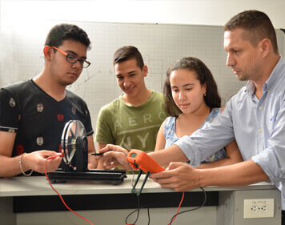
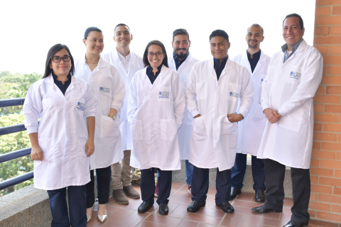

Bienvenido a la Universidad Icesi
Ultimo pull
Facultad de Ingeniería
La Facultad de Ingeniería trabaja en las cuatro áreas del conocimiento que han transformado la sociedad y el mundo en el último siglo: La Ingeniería Industrial, el Diseño, la Ingeniería Bioquímica y las Tecnologías de Información y Comunicaciones. La Ingeniería Industrial perfeccionando métodos de producción y los servicios; el Diseño permitiendo que los objetos y las interfaces con las máquinas sean más amigables, usables y cercanas a los usuarios; la Ingeniería Bioquímica con la revolución de los procesos biológicos, químicos y físicos, la recuperación del medio ambiente y la búsqueda de nuevas fuentes de energía renovables; y finalmente las Tecnologías de Información y las Comunicaciones que interconectaron y transformaron el mundo en las últimas décadas.
Facultad de Ciencias Naturales
La Universidad Icesi ha logrado ampliar su presencia en las nuevas áreas de conocimiento que coinciden con las disciplinas del futuro y de la sostenibilidad para la región, el país y el mundo. Icesi tras haber reflexionado sobre el gran potencial que tendrían para el desarrollo social y económico de Cali y el Valle del Cauca, a mediados del 2008, realizó la apertura de la Facultad de Ciencias Naturales (FCN), con los programas de Biología, Química y Química Farmacéutica, que nacieron con el objetivo de formar profesionales, con una sólida base técnico-científica para la investigación y su aplicación en el desarrollo tecnológico e industrial de la región.
Facultad de Ciencias Administrativas y Económicas
Somos parte de las mejores escuelas de negocios del mundo, así lo certifica la acreditación AACSB que obtuvo la Facultad de Ciencias Administrativas y Económicas, a la cual pertenece la Escuela de Administración. Esta Acreditación fue obtenida en el 2014 y renovada en el 2019, lo cual nos enorgullece y compromete a seguir aprendiendo continuamente para mantenernos pertinentes y relevantes en la educación asociada a los campos del marketing y el management.
Facultad de Derecho y Ciencias Sociales
La Facultad de Derecho y Ciencias Sociales de la universidad representa un pilar fundamental de la transformación institucional de Icesi en las últimas dos décadas. La Facultad reúne los conocimientos y experiencias que hacen posible el desarrollo de la docencia, la investigación y la intervención de la Universidad en las áreas del derecho, la antropología, la ciencia política, la psicología, la sociología, la historia, la filosofía y el arte.
Facultad de Ciencias de la Educación
La Escuela de Ciencias de la Educación abre sus puertas para contribuir al impulso de una educación de calidad en la ciudad y la región. A través de sus seis Licenciaturas, ofrece formación de altísima calidad y con un fuerte componente práctico a los futuros docentes. Es un lugar pensado para ayudar a la transformación de la Educación en la ciudad y la región y aportar así a una sociedad más justa e igualitaria. Sólo con una educación de alta calidad para todos, haremos frente a los problemas sociales que nos aquejan.
Facultad de Ciencias de la Salud
La Facultad de Ciencias de la Salud de la Universidad Icesi, se destacará por su contribución a la formación integral de médicos con los mejores conocimientos en la profesión y su aporte al avance de la ciencia, mediante la investigación y la producción intelectual en las distintas áreas de la salud. Los médicos icesistas serán capaces de adaptarse a los cambiantes retos y necesidades en salud. Sus habilidades cognitivas, de autoaprendizaje y de pensamiento crítico, deberán fortalecer su identidad profesional y su liderazgo. Esperamos que nuestros egresados contribuyan a mejorar la calidad de vida, la salud y el bienestar de los colombianos y que sean competentes para actuar dentro de nuestro sistema de salud, como miembros de equipos, que respondan a las necesidades de nuestros pacientes y nuestra población.
CONTÁCTENOS
Calle 18 No. 122-135
Pance, Cali - Colombia
Teléfono: +(572)555 2334
Fax: +(572)555 1441